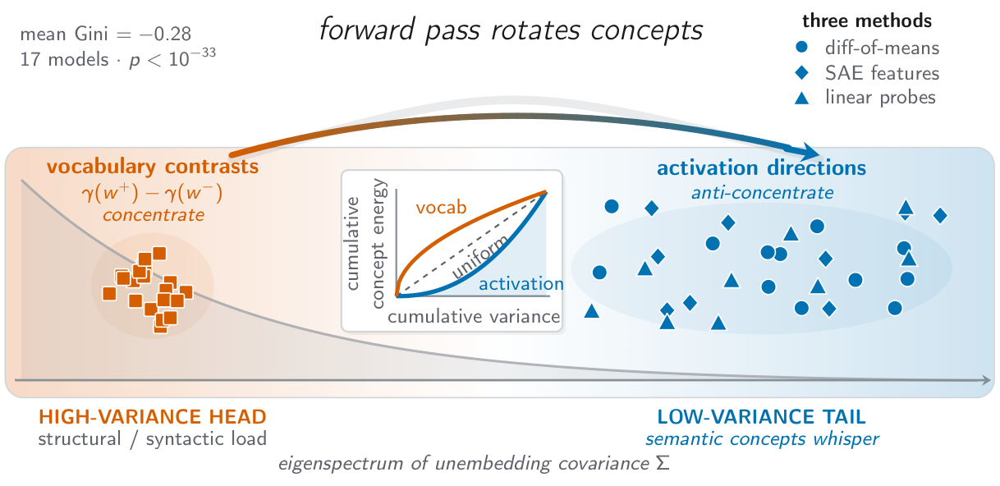

Pratyush Acharya
I study how large language models represent concepts internally, and how that understanding can make post-training more targeted, producing models that are both better aligned and more capable.
My EMNLP 2026 paper, Concepts Whisper, shows that across 17 transformers, semantic concept directions systematically avoid the high-variance directions of the unembedding covariance and are instead encoded in spectrally quiet subspaces. The finding holds across difference-of-means vectors, sparse autoencoders, and linear probes. Next, I want to use this geometry to guide steering, SFT, preference optimization, and RL.
I am currently a Data Scientist at SecurityPal AI, building retrieval, evaluation, and agentic LLM systems. I received my B.Sc. in Computer Science and Information Technology from Tribhuvan University (2024).
News
- Oct 2026Presenting Concepts Whisper at EMNLP 2026: Poster Session F, Oct 27, 09:00–10:30, Hall H. Come say hi!
- 2026Concepts Whisper accepted to the EMNLP 2026 Main Conference.
- Apr 2026Preprint on the pedagogical readiness of LLMs as AI tutors for Nepal's K–10 curriculum.
- Mar 2026Preprint modeling grokking as a variance-limited phase transition.
- Sep 2024Joined SecurityPal AI as a Data Scientist.
Research Interests
- Representation geometry: how concepts are laid out in the residual stream and unembedding space, and why.
- Mechanistic interpretability: sparse autoencoders, linear probes, causal interventions, activation steering.
- Interpretability for post-training: using internal signals to steer, regularize, and monitor SFT, preference optimization, and RL.
- Training dynamics: spectral views of generalization, such as grokking.
Publications

Difference-of-means concept directions anti-concentrate in all 17 models (mean Gini deviation −0.28; model-level p = 3.8×10⁻⁹), replicate on an expanded set of 22 semantic categories, and are corroborated by SAE features and linear probes. We also identify a dual geometry: activation-space concepts anti-concentrate, while static unembedding contrasts concentrate in high-variance directions (p < 10⁻⁴). Split-injection steering experiments show that interventions in the quiet tail show the predicted interference asymmetry in four of five models tested.
Models grokking as a variance-gated transition in AdamW optimization, proposing spectral gating and three complexity regimes that govern the shift from memorization to generalization.
A curriculum-aligned benchmark and seven-metric evaluation framework for LLM tutoring, identifying failure modes such as the "Expert's Curse" and "Contextual Blindspot."